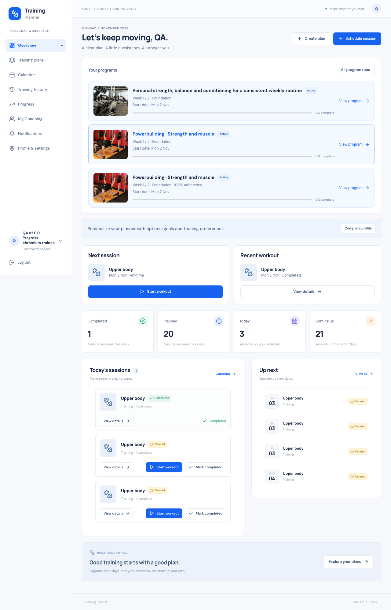
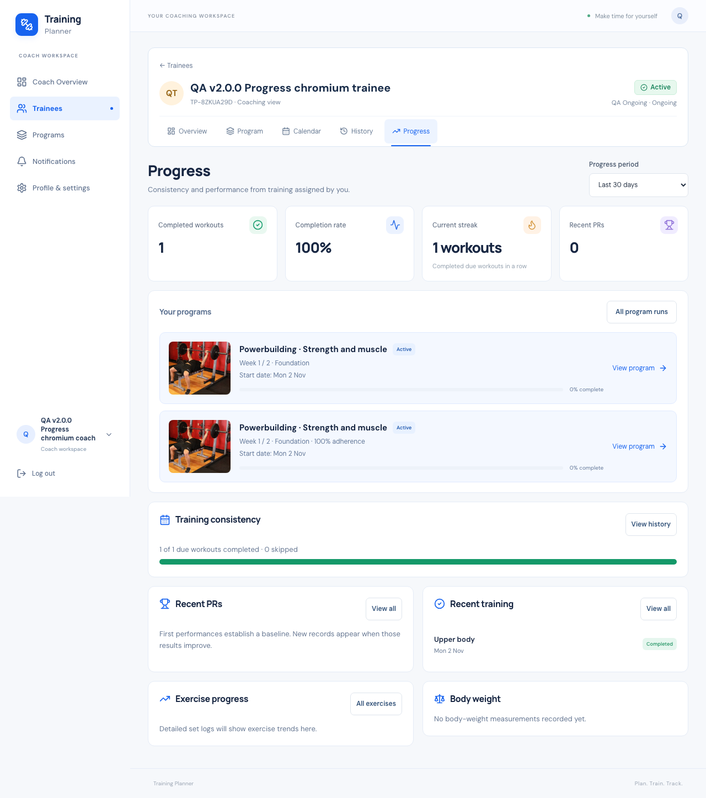
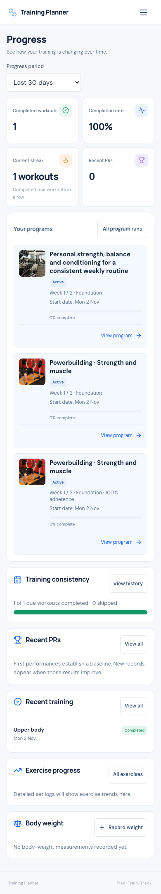

Training Planner · 2 November 2026
v2.3.6 — Progress card layout & thumbnails
READY — DEPLOYED AND VERIFIED
Compact, left-aligned program cards in Coach Progress, Personal
Progress and Personal Overview.
What changed
The old shared program row inherited a vertical flex direction,
centering its icon, text and link inside a large card. It now
uses a photo / details / action grid. The containing panel stays
aligned with the rest of the page.
Cards adapt to their available width: narrow cards retain the
photo beside the title and place an easy-to-tap View program
action below. Tablet actions are no longer hidden. Program
names, status, week/block, adherence, progress and start date
remain readable. Separate saved runs keep their individual
links; this update does not merge or delete programs.
The existing thumbnail component displays the first available
training-exercise image from each run’s saved definition, or the
existing gym image when no image exists or loading fails.
Thumbnail metadata adds no database queries or media copies.
Removed source images safely fall back; custom cover uploads are
outside this update.
Verification
614 tests and 12,064 assertions passed on both SQLite and
isolated MySQL; all 38 JavaScript tests passed. Chromium and
WebKit passed 116 checks covering card geometry, keyboard links,
long names, multiple runs, missing-image fallback and the
existing workout/program lifecycle. Twelve HTTP checks verified
scoped Coach covers and Personal cards.
Screen sizes: 320 × 480, 360, 375, 390, 430, 768 and 1280
widths. No physical phone test is claimed. Production build,
Pint, Prettier, Composer validation/audit and diff checks
passed. The two database suites initially collided in their
shared fake-media test directory; the isolated sequential rerun
passed.
Original local table and media fingerprints match after
disposable QA cleanup. No migration or dependency changes;
authorization, workout records, lifecycle and scheduling
behavior are preserved.
Detailed verification evidence
Personal Progress on mobile
Personal Overview

Release and deployment
READY — DEPLOYED AND VERIFIED. Production moved from verified
v2.3.5 to immutable v2.3.6 commit
d057fd1b9bcaa907f9dd96d5839763ad38eaaa5a. The
source and annotated tag were pushed without changing earlier
tags. This evidence is recorded in a documentation-only
follow-up commit.
Fresh database, runtime, uploads and environment backups were
verified before replacement. The immutable tag was exported and
rebuilt in a separate release directory. 73 patch files were
deployed; all 7,524 origin file hashes verified. All 472 public
assets verified: 468 exact HTTP hashes and 4 CDN-reencoded PNGs
with identical decoded pixels.
Live Chromium and WebKit passed 101 checks across program card
layout, thumbnails, responsive layouts, failed-image fallback
and PWA behavior. Twelve HTTP checks verified Personal and
assignment-scoped Coach card data. No migration ran. Push
remains disabled; cron and environment settings are unchanged.
All 4 disposable live accounts and generated media were removed.
All 650 original rows across 22 tables and 490 original media
files match the fresh backup. Environment bytes match exactly.
Temporary deployment endpoints, archives and credential ledgers
were removed. No known BLOCKER or HIGH issue remains in the
tested scope.
Deployment evidence ·
Open live Progress
Live Coach Progress

Live Personal Progress
